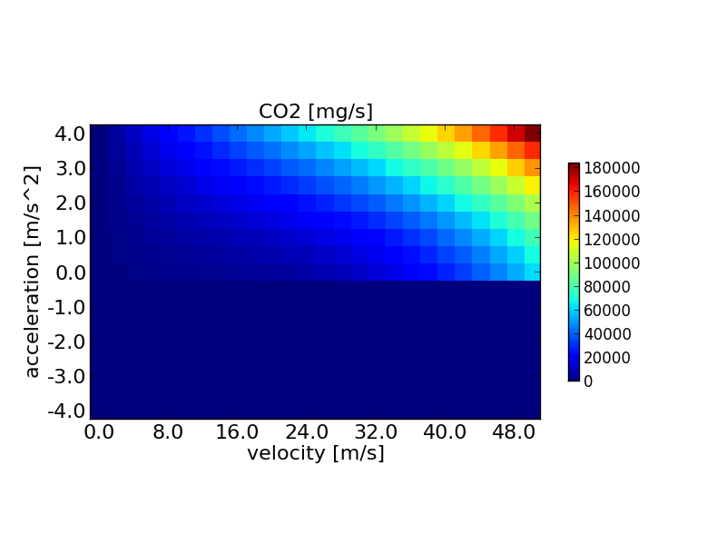

Emissions
SUMO includes some small-sized tools and tests that help to develop and evaluate the implemented emission models. These tools are presented in the following.
emissionsMap#
This tool generates matrices of emissions for a given range of velocities, accelerations, and slopes, given the vehicle's emission class mainly.

The tool obtains parameters that describe the ranges and the emission classes to generate. If the option --iterate <BOOL> is set, emissionsMap iterates over all available emission classes. In this case, the option --output-file <PATH> should denote a folder the emission maps shall be written into. If --iterate <BOOL> is not set, --output-file <FILE> should name the file to generate and the emission class to write the map for must be defined using --emission-class <STRING> (or via a <vType> loaded with --additional-files <FILE> and optional --vtype <STRING>). Vehicle type parameters such as mass or electric vehicle parameters can also be supplied via --additional-files and --vtype. If PHEMlight shall be used, one can define the path to the CEP-files using --phemlight-path <PATH>.
The tool is located in <SUMO_HOME>/bin.
The image shows the visualization of CO2 emission of the HBEFA v2.1-based "P_7_6" emission class.
Options#
Input#
| Option | Description |
|---|---|
| --additional-files <FILE> | Load emission parameters (vType definitions) from FILE(s). |
| --vtype <STRING> | Defines the vehicle type ID to use for emission parameters (optional if --additional-files defines a single vType). |
Processing#
| Option | Description |
|---|---|
| -i <BOOL> --iterate <BOOL> |
If set, maps for all available emissions are written |
| -e <STRING> --emission-class <STRING> |
Defines the name of the emission class to generate the map for |
| --v-min <FLOAT> | Defines the minimum velocity boundary of the map to generate (in [m/s]); default: 0 |
| --v-max <FLOAT> | Defines the maximum velocity boundary of the map to generate (in [m/s]); default: 50 |
| --v-step <FLOAT> | Defines the velocity step size (in [m/s]); default: 2 |
| --a-min <FLOAT> | Defines the minimum acceleration boundary of the map to generate (in [m/s^2]); default: -4 |
| --a-max <FLOAT> | Defines the maximum acceleration boundary of the map to generate (in [m/s^2]); default: 4 |
| --a-step <FLOAT> | Defines the acceleration step size (in [m/s^2]); default: .5 |
| --s-min <FLOAT> | Defines the minimum slope boundary of the map to generate (in [°]); default: -10 |
| --s-max <FLOAT> | Defines the maximum slope boundary of the map to generate (in [°]); default: 10 |
| --s-step <FLOAT> | Defines the slope step size (in [°]); default: 1 |
Output#
| Option | Description |
|---|---|
| -o <FILE> --output-file <FILE> |
Defines the file (or the path if --iterate was set) to write the map(s) into |
The format of the output is a CSV-like with ; as the column separator:
<speed>;<acceleration>;<slope>;<Pollutant-Type>;<Polutant-Value-in-mg/s-or-ml/s>
Emissions#
| Option | Description |
|---|---|
| --emissions.volumetric-fuel <BOOL> | Return fuel consumption values in (legacy) unit l instead of mg; default: false |
| --phemlight-path <PATH> | Determines where to load PHEMlight definitions from; default: ./PHEMlight/ |
| --phemlight-year <INT> | Enable fleet age modeling with the given reference year in PHEMlight5; default: 0 |
| --phemlight-temperature <FLOAT> | Set ambient temperature to correct NOx emissions in PHEMlight5 |
Report#
| Option | Description |
|---|---|
| -v <BOOL> --verbose <BOOL> |
Switches to verbose output; default: false |
| -? <BOOL> --help <BOOL> |
Prints the help screen |
emissionsDrivingCycle#
This tool computes emissions given a timeline of speeds/accelerations
for a single vehicle (via --timeline-file <FILE>) or trajectories from a netstate, route, or Amitran file (via --netstate-file <FILE>). Vehicle-specific emission and energy parameters (such as mass, power, recuperation, or electric vehicle parameters) can be loaded from <vType> definitions using --additional-files <FILE> and selected with --vtype <STRING> (optional when --additional-files contains only one <vType>; if --emission-class is not explicitly set, the emissionClass of the selected <vType> is used).
When using --timeline-file <FILE>, the driving cycle is read from a ;-separated CSV file (customizable via --timeline-file.separator; header lines can be skipped via --timeline-file.skip or --skip-first) with the following
columns:
- time (in [s]); if only a single column is present per line, it is interpreted as velocity and time increases in steps of 1 s starting from 0
- velocity (in [m/s] unless --kmh is set, see below)
- acceleration (in [m/s^2]); this column may be omitted when recalculated using --compute-a or --compute-a.forward
- optional: slope (in [°]); if given, one has to enable it using the option --have-slope
The tool generates a ;-separated .csv file which contains the
following columns by default (configurable via --output.attributes):
- time (in [s])
- velocity (in [m/s])
- acceleration (in [m/s^2])
- slope (in [°])
- CO emissions (in [mg/s])
- CO2 emissions (in [mg/s])
- HC emissions (in [mg/s])
- PMx emissions (in [mg/s])
- NOx emissions (in [mg/s])
- fuel consumption (in [mg/s], or [ml/s] if --emissions.volumetric-fuel is set)
- electricity consumption (in [Wh/s])
- optional: coasting deceleration (in [m/s^2], included when
amountorallis passed to --output.attributes)
Additionally, per-vehicle XML emission output can be written via --emission-output <FILE>, aggregated and distance-normed CSV totals via --sum-output <FILE>, and the sums of the generated emissions / consumed fuel are printed on the screen unless --quiet is set.
The tool is located in <SUMO_HOME>/bin.
Options#
Input#
| Option | Description |
|---|---|
| -t <FILE> --timeline-file <FILE> |
Defines the file to read the driving cycle from. |
| --timeline-file.skip <INT> | Skips the first NUM lines of the timeline file; default: 0 |
| --timeline-file.separator <STRING> | Defines the entry separator in the timeline file; default: ; |
| -n <FILE> --netstate-file <FILE> |
Defines the netstate, route, and trajectory (Amitran) files to read the driving cycles from. |
| --additional-files <FILE> | Load emission parameters (vType definitions) from FILE(s). |
| -e <STRING> --emission-class <STRING> |
Defines for which emission class the emissions shall be generated; default: HBEFA4/default |
| --vtype <STRING> | Defines the vehicle type ID to use for emission parameters (requires --additional-files; optional when a single vType is loaded). |
Processing#
| Option | Description |
|---|---|
| -a <BOOL> --compute-a <BOOL> |
If set, the acceleration is computed instead of being read from the file; default: false |
| --compute-a.forward <BOOL> | If set, the acceleration for time t is computed from v(t+1) - v(t) instead of v(t) - v(t-1); default: false |
| --compute-a.zero-correction <BOOL> | If set, the acceleration for time t is set to 0 if the speed is 0; default: false |
| -s <BOOL> --skip-first <BOOL> |
If set, the first line of the read file is skipped; default: false |
| --kmh <BOOL> | If set, the given speed is interpreted as being given in km/h; default: false |
| --have-slope <BOOL> | If set, the fourth column is read and used as slope (in [°]); default: false |
| --slope <FLOAT> | Sets a global slope (in [°]) that is used if the file does not contain slope information; default: 0 |
| --begin <TIME> | Defines the begin time in seconds; default: 0 |
| --end <TIME> | Defines the end time in seconds; default: -1 |
Output#
| Option | Description |
|---|---|
| -o <FILE> --output-file <FILE> |
Defines the file to write the emission cycle results into. |
| --output.attributes <STRING[ ]> | Defines the attributes to write (speed, acceleration, slope, CO_abs, CO2_abs, HC_abs, PMx_abs, NOx_abs, fuel_abs, electricity_abs, amount, or all). |
| --emission-output <FILE> | Save the emission values of each vehicle in XML format. |
| --sum-output <FILE> | Save the aggregated and distance-normed emission values of each vehicle in CSV format. |
Emissions#
| Option | Description |
|---|---|
| --emissions.volumetric-fuel <BOOL> | Return fuel consumption values in (legacy) unit l instead of mg; default: false |
| --phemlight-path <PATH> | Determines where to load PHEMlight definitions from; default: ./PHEMlight/ |
| --phemlight-year <INT> | Enable fleet age modeling with the given reference year in PHEMlight5; default: 0 |
| --phemlight-temperature <FLOAT> | Set ambient temperature to correct NOx emissions in PHEMlight5 |
Report#
| Option | Description |
|---|---|
| -q <BOOL> --quiet <BOOL> |
When set, the tool does not report anything; default: false |
| -? <BOOL> --help <BOOL> |
Prints the help screen |